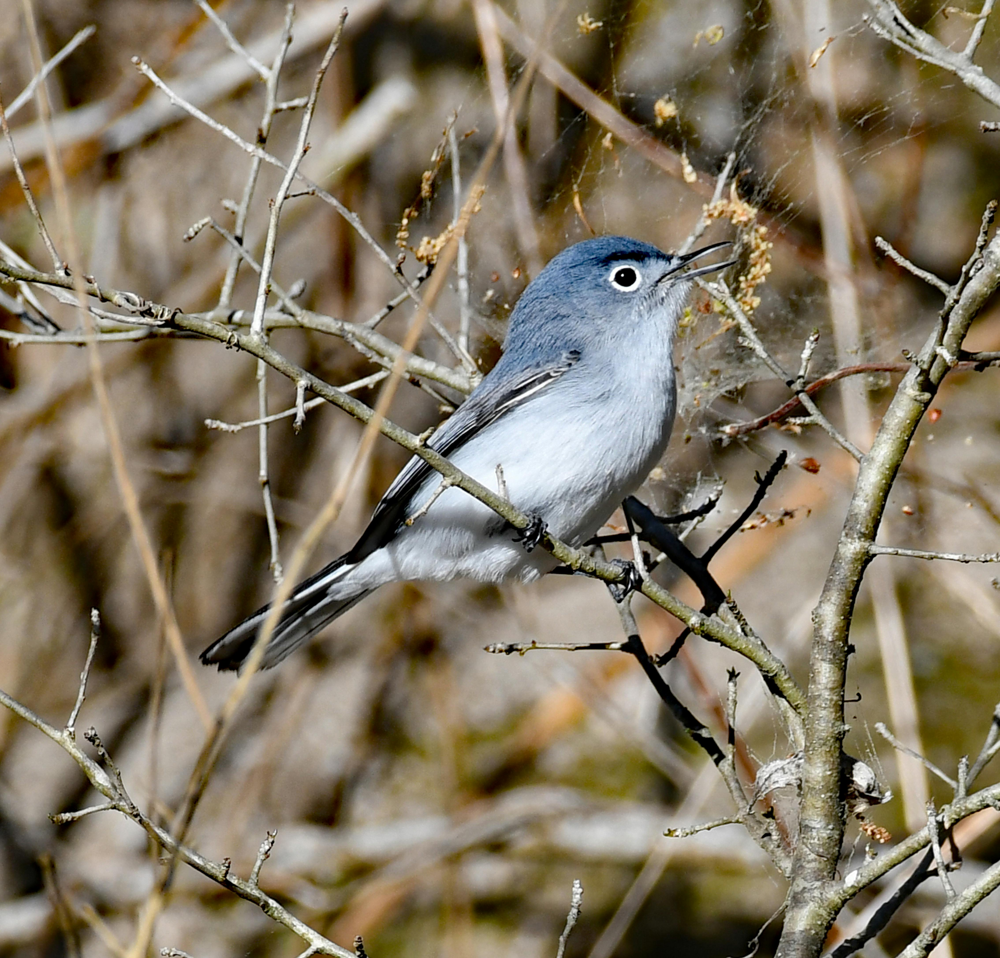
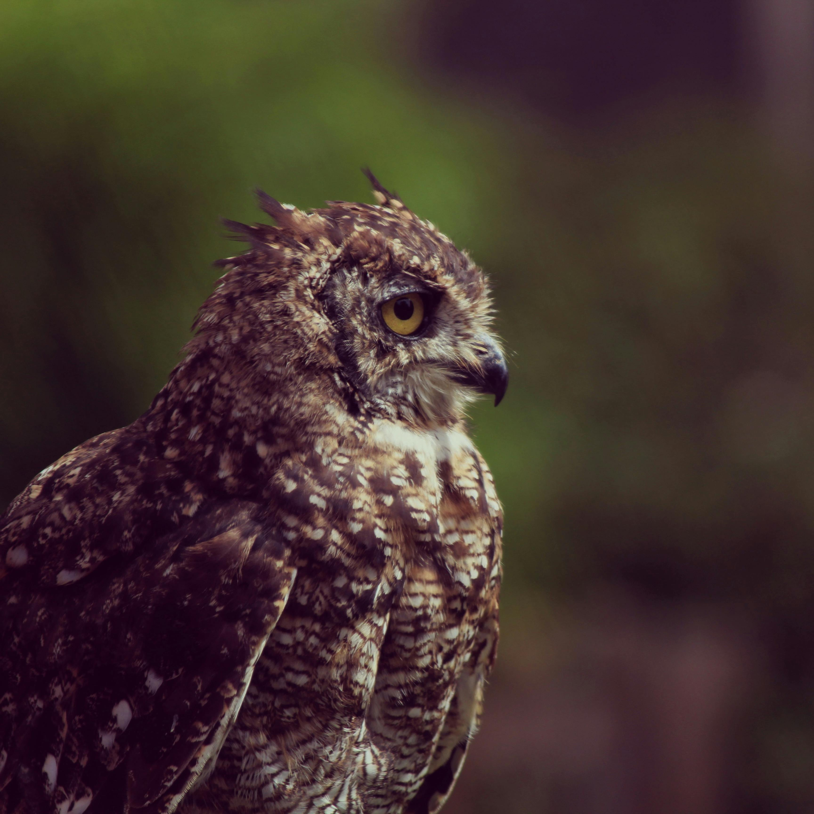

The Birds of Pennsylvania
 
Hundreds of different species of birds call Pennsylvania home, from the tiny Blue-gray Gnatcatcher (which weighs less than a quarter ounce!) to Great Horned Owls.
This site is a repository of information about common Pennsylvanian birds for residents who want to become more informed about the flying fauna around their homes. You can learn anything from what bird you keep seeing around to whether that bird ever attacks people (but don't worry, most of the birds are very friendly).
How to Use This Site
- To see cool pictures of birds, visit the Gallery.
- You can use the Data Table to learn more about a specific type of bird (e.g., weight or wingspan).
- If you have been unlucky enough to suffer an attack, let us know in the Attack Form!
- Last but not least, there is an Interactive Atlas of bird populations across the state.